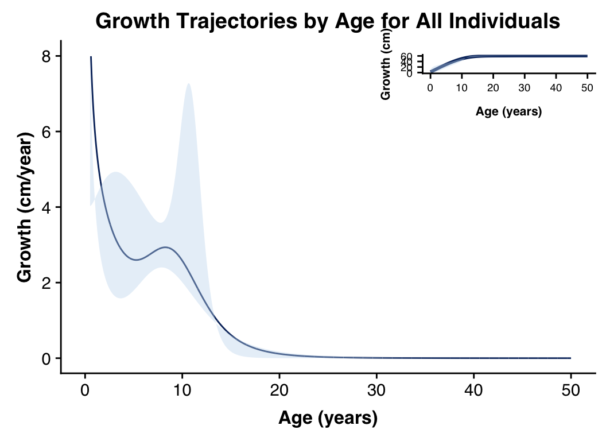

machandaanalysis.Rmdlibrary(JPPSiterweight)
library(tidyverse)
library(cowplot)Here we will use the data from Machanda et al. 2019 to explore the JPPS functionality.
# TODO usethis::use_data
#
dat <- readxl::read_excel(path = "~/Downloads/average body area and length_kanyawara 2012.xlsx", sheet = 1) %>%
magrittr::set_colnames(tolower(colnames(.))) %>%
dplyr::mutate(
lengthcubed = avg.length^3
)In this paper, we were interested in analyzing wild chimpanzee growth curves and exploring differences in cpative versus wild chimpanzee growth, as well as any sex-differences in growth. In this vignette, we will hone in on the Kanyawara chimpanzees body-length and explore differences in growth trajectory by sex. As a result, we will fit models for males, females, and all chimpanzees within each community respectively.
Below, we specify some starting parameters that will be needed for later model fitting. These parameters were taken from Leigh & Shea 1996.
adult.meanlength.all <- mean( dat$avg.length[dat$age > 15] )
adult.meanlength.male <- mean( dat$avg.length[dat$age > 15 & dat$sex == "M"] )
adult.meanlength.female <- mean( dat$avg.length[dat$age > 15 & dat$sex == "F"] )
# from Leigh & Shea 1996 (Yerkes data)
par.init.all <- c(B = adult.meanlength.all,
D1 = 8.835 , D2 = 9.450, D3 = 28.465, C1 = 3.355, C2 = 12.990, C3 = 1.005)
# these are averages
par.init.female <- c(B = adult.meanlength.female,
D1 = 8.48 , D2 = 8.93, D3 = 44.81, C1 = 1.92, C2 = 6.95, C3 = 0.79)
par.init.male <- c(B = adult.meanlength.male,
D1 = 9.19 , D2 = 9.97, D3 = 12.12, C1 = 4.79, C2 = 19.03, C3 = 1.22)We are going to fit two formulations of the JPPS non-linear parametric model: (1) Ordinary Non-linear Least Squares (ONLS) and (2) Iteratively Reweighted Non-linear Least Squares (IRNLS). For each model form, we start with a pre-specified set of parameters (shown above) and fit the model/estimate parameters by minimizing the residual sum of squares (through optimization, specifically Simulated Annealing although other optimizers are warranted and can be easily incorporated). We then run these models many, many times (“replicates”) in order to form a sampling distribtuion of the parameter estimates. From this distribution, we then calulcate a 95% confidence interval for each respective parameter estimate (i.e. a non-parametric approach).
The ONLS and IRNLS largely differ in their approach to handle the heteroscedasticity that is observed in our data (e.g. variance in size is correlated with increased in age). The ONLS model assumes constant variance (homoscedasticity) and does not account for this variance deviation. In contrast, the IRNLS model weights each individual data point in a manner that attempts to reduce the variance (reduced through minimizing the sum of squares of a linear model fit with the residuals as the regressors and the predicted values of Y (y-hat) used as weights). This weighted approach allows for heteroscedasticity to better “controlled” for and not violate the base assumption of least-squares.
Here, I have specifed a few number of replicates to create the sampling distributions. In your own analyses, you will want to increase this for accuracy (versus computation time).
reps <- 1e2
# faster for loop
ret.ord <- parallel::mclapply(1:reps, FUN = function(x){
JPPSiterweight::optimize.jpps.ord(
ind.obs = dat$age,
dep.obs = dat$avg.length,
params = par.init.all)
})
# let's bind our replications together into a dataframe
ret.ord.params <- ret.ord %>%
purrr::map(., "params")
ret.ord.params <- as.data.frame(do.call(rbind, ret.ord.params))
# let's summarize and 2.5th, 50th, and 97.5 probabilities
ret.ord.params.summ <- apply(ret.ord.params, 2, quantile, probs = c(0.025, 0.5, 0.975))
knitr::kable(ret.ord.params.summ)| B | D1 | D2 | D3 | C1 | C2 | C3 | |
|---|---|---|---|---|---|---|---|
| 2.5% | 60.07006 | 4.326987 | 7.363736 | 20.78468 | 0.3970604 | 4.197896 | 0.1696776 |
| 50% | 60.80549 | 5.624139 | 8.348464 | 28.07473 | 1.1563587 | 5.631796 | 0.2138735 |
| 97.5% | 61.11585 | 7.918715 | 10.253161 | 35.33821 | 1.9867907 | 15.391279 | 0.7895386 |
# let's get predictions from our model
predictions_grwth <- predict(makeJPPS.firstorder_obj(ret.ord.params.summ[2,]), x = seq(0.01, 50, by = 0.01)) # make fine scale for geom_line so it does not have disjointed connections
predictions_grwth.lowerCI <- predict(makeJPPS.firstorder_obj(ret.ord.params.summ[1,]), x = seq(0.01, 50, by = 0.01)) # make fine scale for geom_line so it does not have disjointed connections
predictions_grwth.upperCI <- predict(makeJPPS.firstorder_obj(ret.ord.params.summ[3,]), x = seq(0.01, 50, by = 0.01)) # make fine scale for geom_line so it does not have disjointed connections
predictions_grwth.CI <- dplyr::left_join(predictions_grwth.lowerCI, predictions_grwth.upperCI, by = "age")
predictions_veloc <- predict(makeJPPS.secondorder_obj(ret.ord.params.summ[2,]), x = seq(0.01, 50, by = 0.01)) # if you set velocity to 0 it will be INF because JPPS forces the model to go through 0
predictions_veloc.lowerCI <- predict(makeJPPS.secondorder_obj(ret.ord.params.summ[1,]), x = seq(0.01, 50, by = 0.01)) # if you set velocity to 0 it will be INF because JPPS forces the model to go through 0
predictions_veloc.upperCI <- predict(makeJPPS.secondorder_obj(ret.ord.params.summ[3,]), x = seq(0.01, 50, by = 0.01)) # if you set velocity to 0 it will be INF because JPPS forces the model to go through 0
predictions_veloc.CI <- dplyr::left_join(predictions_veloc.lowerCI, predictions_veloc.upperCI, by = "age")Now that we have predictions, we want to plot the growth trajectory and the velocity interval. We are going to explore the cowplot package and an inset plot with growth trajectory and growth, respectively.
# you can really custom the plot however you want with ggplot
grwth_traj.plot <- ggplot() +
geom_smooth(data = predictions_grwth, aes(x = age, y = outcome), color = "#08306b") +
geom_ribbon(data = predictions_grwth.CI, aes(x = age, ymin = outcome.y, ymax = outcome.x), color = NA, fill = "#c6dbef", alpha = 0.4) +
xlab("Age (years)") + ylab("Growth (cm)") +
# ggtitle("Growth over Age for All Individuals") +
theme(plot.title = element_text(family = "Helvetica", face = "bold", hjust = 0.5, size = 10),
axis.title = element_text(family = "Helvetica", face = "bold", hjust = 0.5, size = 8),
axis.text = element_text(family = "Helvetica", hjust = 0.5, size = 7),
legend.position = "right",
legend.title = element_text(family = "Helvetica", face = "bold", vjust = 0.85, size = 8),
legend.text = element_text(family = "Helvetica", hjust = 0.5, vjust = 0.5, angle = 90, size = 7),
panel.background = element_rect(fill = "transparent"),
plot.background = element_rect(fill = "transparent"),
panel.grid = element_blank(),
panel.border = element_blank())
# you can really custom the plot however you want with ggplot
grwth_veloc.plot <- predictions_veloc %>%
ggplot() +
geom_line(aes(x = age, y = outcome), color = "#08306b") +
geom_ribbon(data = predictions_veloc.CI, aes(x = age, ymin = outcome.x, ymax = outcome.y), color = NA, fill = "#c6dbef", alpha = 0.4) +
xlab("Age (years)") + ylab("Growth (cm/year)") +
ggtitle("Growth Trajectories by Age for All Individuals") +
ylim(0,8) +
theme(plot.title = element_text(family = "Helvetica", face = "bold", hjust = 0.5, size = 14),
axis.title = element_text(family = "Helvetica", face = "bold", hjust = 0.5, size = 12),
axis.text = element_text(family = "Helvetica", hjust = 0.5, size = 11),
legend.position = "right",
legend.title = element_text(family = "Helvetica", face = "bold", vjust = 0.85, size = 12),
legend.text = element_text(family = "Helvetica", hjust = 0.5, vjust = 0.5, angle = 90, size = 10),
panel.background = element_rect(fill = "transparent"),
plot.background = element_rect(fill = "transparent"),
panel.grid = element_blank(),
panel.border = element_blank())
fullplot <- ggdraw() +
draw_plot(grwth_veloc.plot) +
draw_plot(grwth_traj.plot, x = 0.6, y = .7, width = .4, height = .2)
plot(fullplot)
# when we are satisified with the placements, we can write this out for publication
#svglite::svglite(file = "~/Desktop/full_comb_growthtraj.svg", width = 11, height = 8)
#plot(fullplot)
#graphics.off()Now we will move on to the IRNLS models and account for our heteroscedasticity.
# faster for loop
ret.irnls <- parallel::mclapply(1:reps, function(x){
JPPSiterweight::optimize.jpps.iteratively_reweight(par = par.init.all,
optim.method = "SANN",
iter.method = "Nelder",
tol = 1e-9, # tolerance
maxit = 500, # number of iterative weight steps to perform
ind.obs = dat$age,
dep.obs = dat$avg.length)
})Here we will just print the summary.
ret.irnls.params <- ret.irnls %>%
purrr::map(., "params")
ret.irnls.params <- as.data.frame(do.call(rbind, ret.irnls.params))
# let's summarize and 2.5th, 50th, and 97.5 probabilities
ret.irnls.params.summ <- apply(ret.irnls.params, 2, quantile, probs = c(0.025, 0.5, 0.975))
knitr::kable(ret.irnls.params.summ)| B | D1 | D2 | D3 | C1 | C2 | C3 | |
|---|---|---|---|---|---|---|---|
| 2.5% | 60.73795 | 2.764230 | 7.385284 | 19.61176 | 0.3803786 | 4.220326 | 0.3701726 |
| 50% | 60.85737 | 7.141700 | 7.449051 | 28.15754 | 0.4340967 | 4.322011 | 0.4771508 |
| 97.5% | 60.95719 | 9.460272 | 7.549162 | 35.46935 | 0.4901077 | 4.414502 | 8.0181135 |